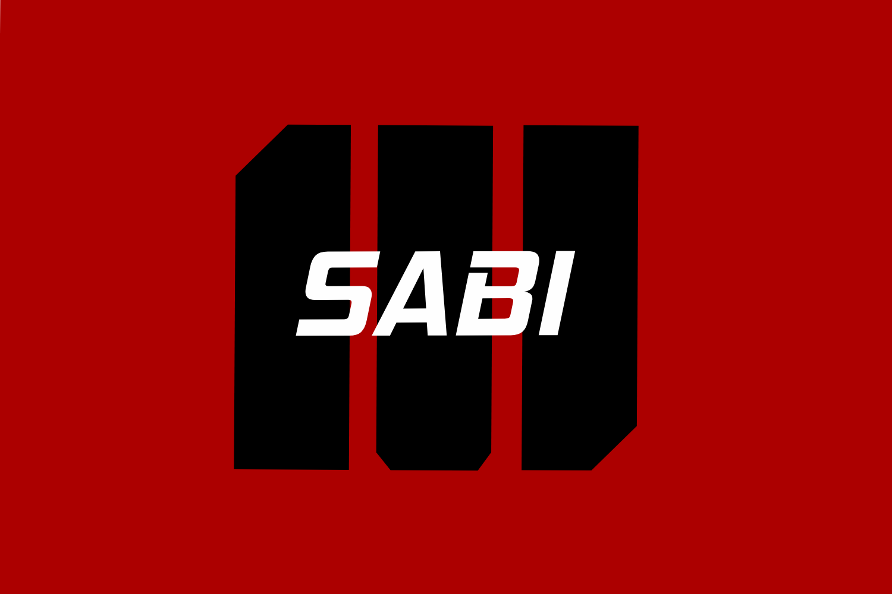

Beranda
Agribisnis
Kehutanan
Peternakan
Agroteknologi
Ilmu Kelautan
Ilmu Tanah
Manajemen
Mahasiswa Sabi
Praktisi Kampus Andalan
ILMU KELAUTAN
Referensi Jurnal
Jurnal Nasional
Jurnal Internasional
Kelas Andalan
Ongoing
Semester 1
Bahasa Indonesia
Bahasa Inggris
Matematika Dasar I
Fisika Dasar I
Pengantar Teknologi Informasi
Kimia Dasar
Biologi Dasar
Wawasan Maritim Nusantara
Semester 2
Agama
Statistik Kelautan
Biologi Laut
Fisika Dasar II
Matematika Dasar II
Kimia Organik
Dasar-Dasar Pemograman
Semester 3
Algoritma Pemograman
Teknik Penulisan Ilmiah
Lingkungan Laut
Oseanografi dan Perubahan Iklim
Keselamatan Kerja Laboratorium dan Lapangan
Geologi dan Sedimentologi
Biokimia
Semester 4
Widya Selam
Oseanografi Laut Dangkal dan Estuari
Metode Numerik Kelautan
Biodiversitas Laut
Kimia Bahan Hayati Laut
Hukum Laut
Pancasila
Semester 5
Kewarganegaraan
Kewirausahaan
Ekologi Laut Dangkal dan Estuari
Konservasi Laut dan Pesisir
Instrumen Kelautan
SIG dan Penginderaan Jauh Kelautan
Semester 6
Proposal Riset
Semester 7
On Going
Semester 8
On Going
Mahasiswa Sabi Copyright 2021 Muhammad Surya Putra Fadillah
Sabi
Mahasiswa Sabi
Sekolah Sabi
Penginapan Sabi
Facebook
Instagram
Youtube
Chat Admin
